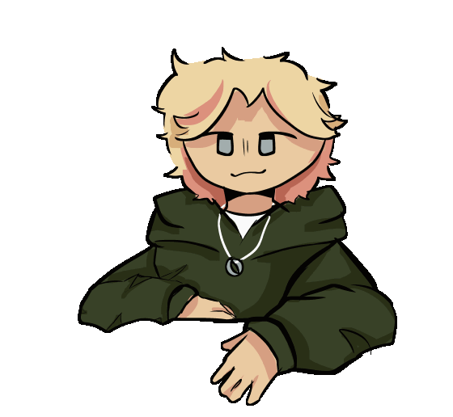

ssuncreature.gif
ssuncreature
she / they / it
minor - 20/04
- based in new zealand
- javascript, HTML, and python programmer
- self-taught artist
- code/writing developer for ClanGen
- interested in ornithology
about_me.html
Hey there! I am a high school student based in Aotearoa/New Zealand. My
primary interests are programming, animation, illustration, ornithology, and marine biology. My dream
job is to work as either an ornithologist or marine biologist, and make illustrations for art students
and biologists alike based on my research.
I can often be seen online working on open source
projects, which can be seen on my github or code portfolio!